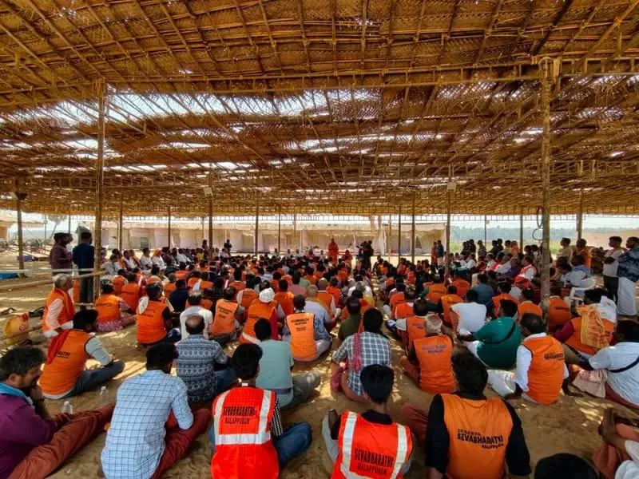
Festival update
Preparation for Mahamagham 2027
Use this area for verified updates from the organising team.
News, updates, press releases, photographs, videos and official media resources.

Use this area for verified updates from the organising team.
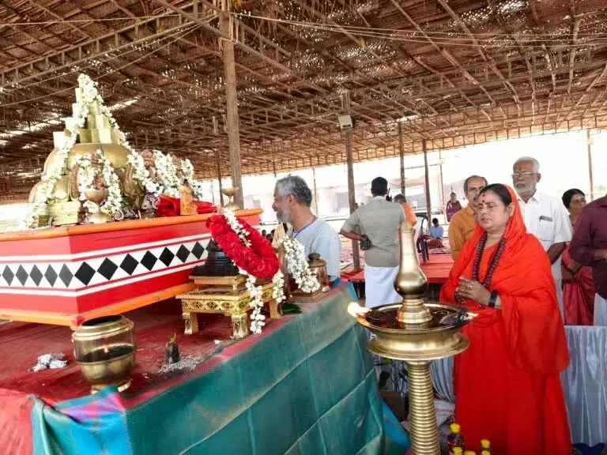
Official volunteer information and community-service updates.

Photo stories and approved festival features can be published here.
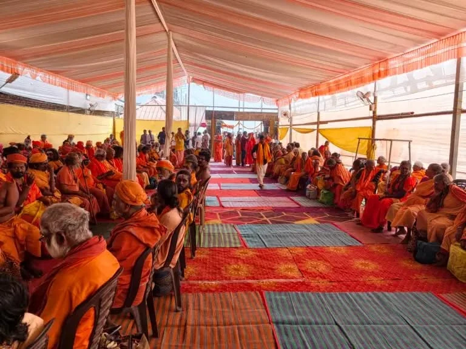
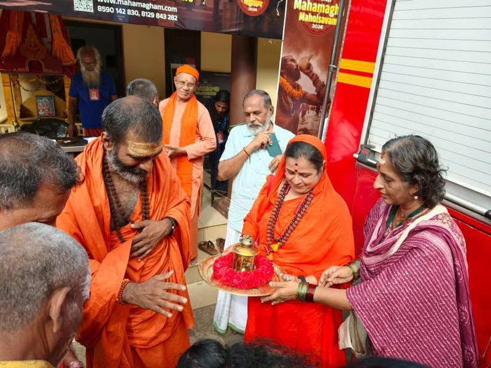
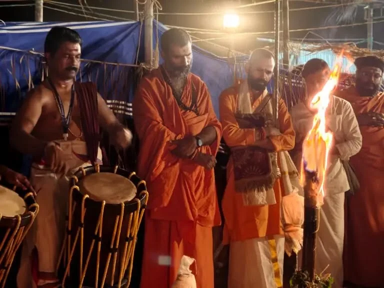
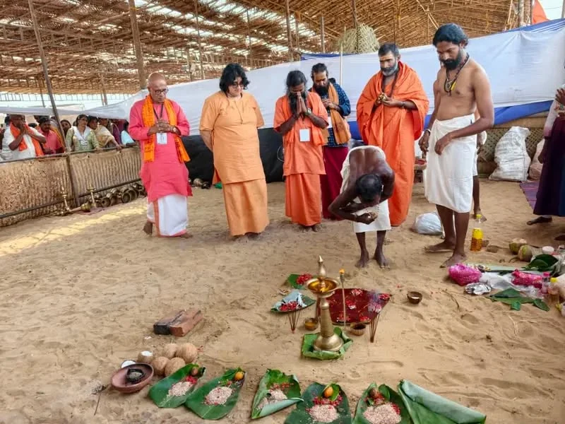

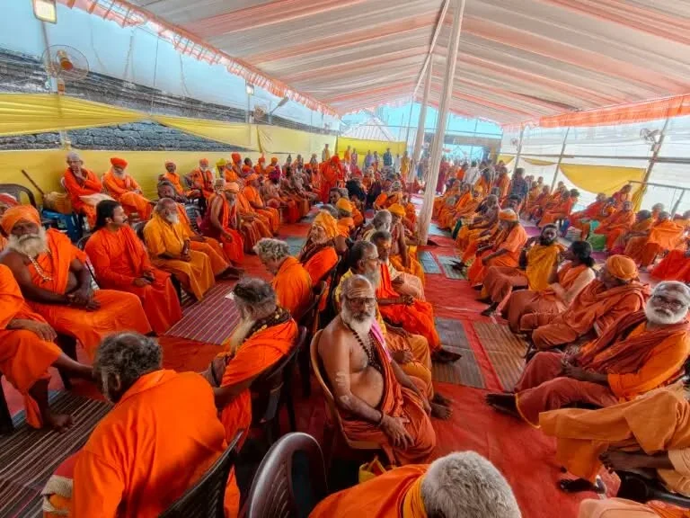
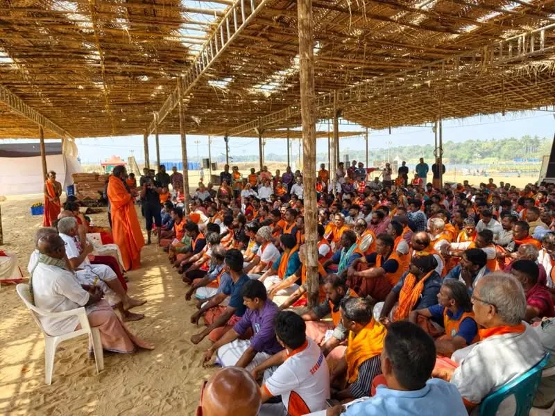

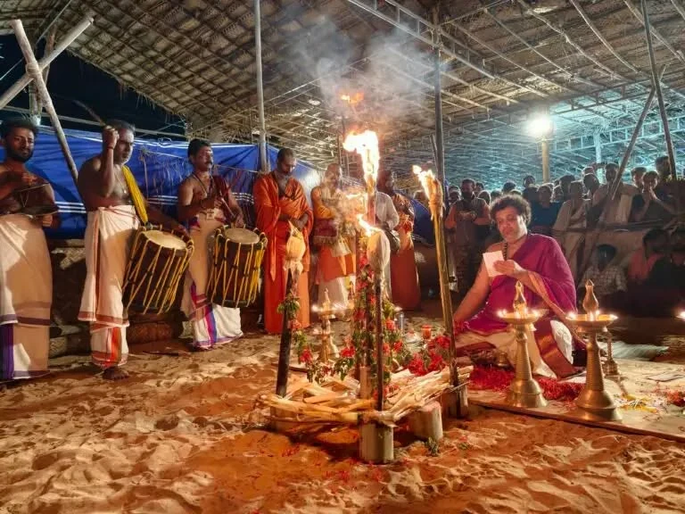

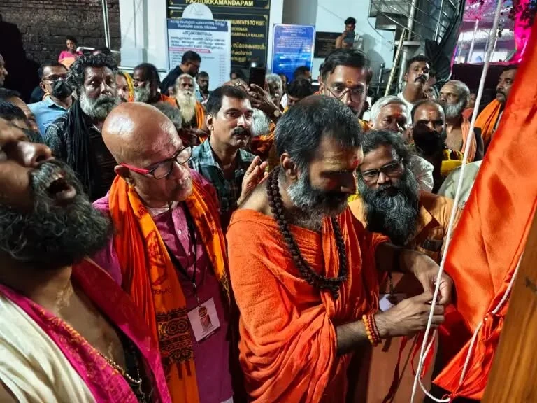
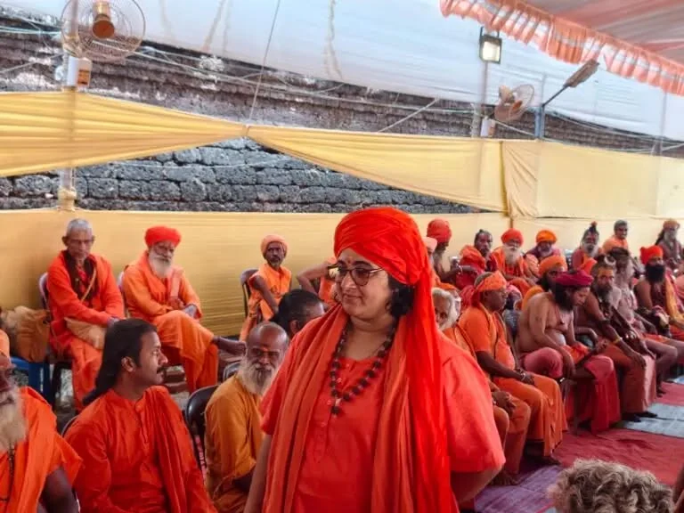
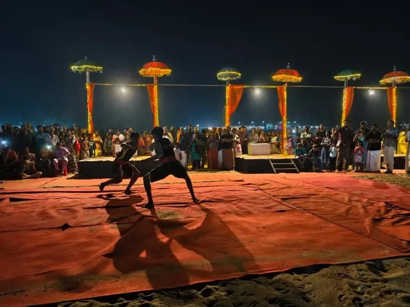

Use the official YouTube channel for published videos. Embedded playlists can be added later when final video URLs are available.
Open YouTube channel →Approved event description, logos, identity guidelines, high-resolution photography, speaker information, event facts, press contacts and downloadable materials can be organised in this section.